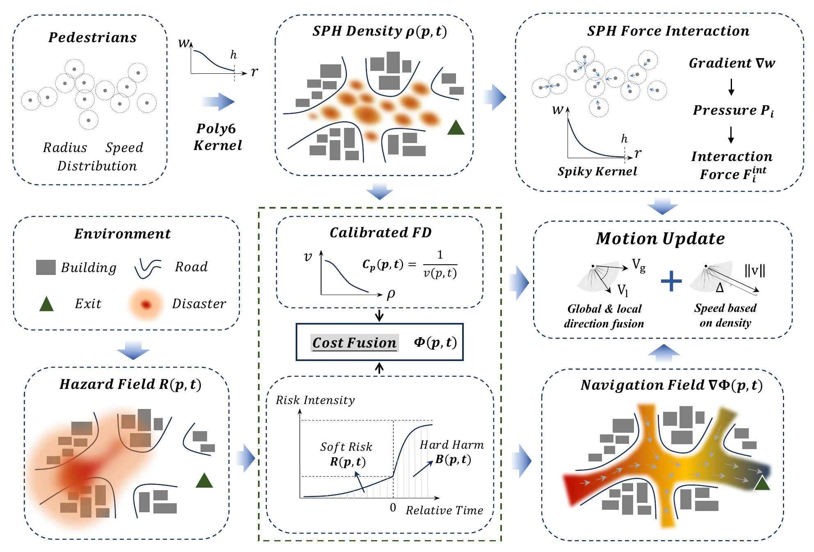
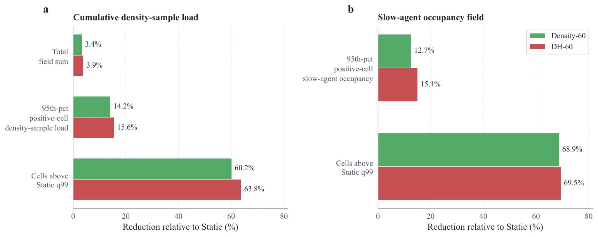

Evolving conditions
Represent hazard intensity as a spatial and temporal field rather than a fixed obstacle map.
Evaluating evacuation guidance when the safest path depends on both hazard evolution and collective movement.
RESS couples dynamic hazard fields, route guidance, and pedestrian simulation to compare navigation strategies under time-varying emergency conditions.
Emergency routes interact with hazard propagation, congestion, and delayed information. RESS studies this interaction directly, distinguishing ordinary travel efficiency from exposure, severe harm, and tail risk.
Represent hazard intensity as a spatial and temporal field rather than a fixed obstacle map.
Compare routing rules that respond differently to distance, congestion, and projected exposure.
Evaluate evacuation time alongside soft risk, hard harm, and the upper tail of adverse outcomes.
The figures retain the visual grammar of the manuscript and can be opened at full resolution.

Pedestrian density, calibrated flow relationships, and the evolving hazard field are combined into a dynamic navigation cost whose gradient guides motion while preserving local interaction forces.

Density-60 and DH-60 are compared with Static routing for cumulative density-sample load and slow-agent occupancy. Percentages are conditional on the stated Shipai scenario and evaluation definitions.
Compilation, input preflight, and focused CPU/GPU agreement tests establish bounded implementation evidence. They do not replace full trajectory, evacuation-outcome, hard-harm, and paired-scenario validation. Reference solvers therefore remain the interpretation baseline until wider equivalence tests are complete.
Urban geometries, hazard inputs, population settings, and control definitions.
Route behavior, evacuation trajectories, and risk distributions under common scenarios.
Reference-versus-accelerated solver checks and clearly bounded acceptance criteria.